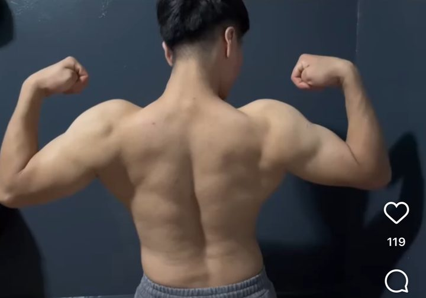
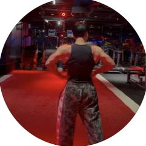
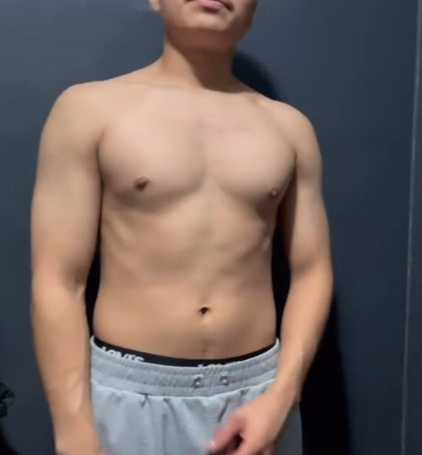

Jonathan "Jony" García, 19 años, Los Ángeles. Trabaja en construcción y entrena igual. Hizo el bulk sucio, la definición extrema y los atracones del fin de semana, y salió de ahí con paciencia y estructura. No vende un nicho de laboratorio: vende su vida como prueba de que se puede.

Alberto lo dijo claro: más marca personal que nicho a muerte. La marca es él (latino, joven, trabajador, constante). El núcleo de venta son los chavos de 18 a 25 que empiezan o están estancados. Así puede hacerse viral con cualquier latino y vender a quien más se le parece.
"Ayudo a latinos de 18 a 25 que trabajan duro a perder grasa o ganar músculo sin dietas locas ni vivir en el gym, con un plan que encaja en su jornada."
Versión corta para videos: "Soy Jony, trabajo en construcción y te enseño a ponerte en forma aunque llegues reventado."
La que pidió Alberto. Clara y ambiciosa. Funciona en bio, en el gancho ("Soy el coach de los latinos y…") y escala si crece.
Serie y frase de marca, no nombre. Perfecta para los vlogs de su día a día en construcción. Úsala como título de serie aunque elijas la 1.
Más de comunidad (hashtag, futuro grupo o merch). Riesgo: suena genérico y ya existe en otras cuentas. Úsala solo como hashtag propio, no como nombre.
El usuario sigue siendo @jnyfit._: tiene verificación y 241 posts, así que no conviene cambiarlo. El "nombre" de Instagram (el campo que sale en búsquedas) pasa a ser "Jony | Coach de los latinos" para que lo encuentren al buscar "coach latino".

Cada etapa es una serie de videos. El chavo de 18 a 25 está justo en una de estas casillas.
Flexiones y dominadas en su cuarto. Primer gym a los 17, solo; hasta las mancuernas de 5 lb pesaban. Rutina de YouTube.
Bulk sucio: 4.000 kcal, comida rápida, mass gainer, sin pierna ni orden. "Más grasa que músculo."
Definición extrema, sin carbos, con hambre y atracones el finde. Estancado, cada vez levantaba menos. "Estás obsesionado."
Paciencia, estructura y comida que le gusta en porciones. Peso muerto de 465 lb. Un compañero de trabajo le pide que lo lleve al gym.
"Me gusta hacer esto. Voy a ser más paciente y no buscar atajos."
Y su definición de disciplina: "hacerlo tengas ganas o no".
"Oye, he notado que bajaste de peso, ¿cómo le hiciste? ¿Cómo entrenas aunque llegues cansado?"
Ahí empezó a ayudar a un compañero de la obra. Ese video es su origen como coach.

Une su trabajo (construcción) con lo que va a estudiar (la pirámide de Eric Helms): primero los cimientos, luego lo demás. Se explica en 30 segundos y da para cientos de videos.
Un plan que cabe en tu jornada real: 3–4 días si sales reventado de la obra, no 6. Horario fijo, comida preparada y nada de improvisar.
Los cimientos: calorías, proteína, sueño y pasos. Si esto no está, la rutina "del influencer" no sirve de nada.
Sobrecarga progresiva con técnica y apuntando. Subir peso o repeticiones semana a semana, sin egolifting.
Tacos, pan dulce y la carne asada del domingo: se ajustan las porciones, no se prohíben. Se revisa cada semana y se corrige.
"Tú te preocupas por la creatina y el batido post-entreno, y no tienes los cimientos. Ningún albañil empieza por el techo."
"Trabajo en construcción y algo aprendí: nadie empieza una casa por el techo. Tu físico igual. Primero Orden, un plan que quepa en tu jornada. Luego Base: calorías, proteína y dormir. Después Repeticiones que progresan, semana a semana. Y al final Ajustar sin prohibir: tus tacos se quedan, ajustamos la porción. Eso es OBRA. Escríbeme PLAN y te digo por dónde empezar."
Sacado de lo que él mismo escribió. Cada línea es un video corto.
"Si vas a trabajar conmigo, lo primero que vas a dejar son las excusas. No hay fórmula mágica: constancia, disciplina y dedicación. Yo te ayudo, pero depende de ti."
Sistema Jony · Escuela AGLEZ · Parte 1: Perfil. Siguientes partes: Oferta, Contenido, Embudo por DM, Formación (pirámides), Guion de cierre, CRM y Reporte.